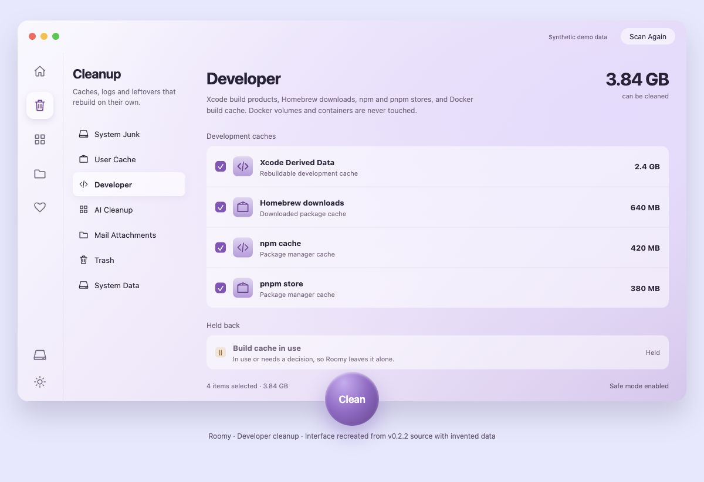

Find the buildup.
Checkup brings together app caches, developer tools and AI-tool leftovers. Dedicated cleanup screens let you explore each area in more detail.
Xcode · Homebrew · Node tools · AI tools
A free, open-source Mac cleaner.
Find the buildup. Review your files.
See how your Mac is doing.
v0.2.2 · macOS 26+ · Apple silicon
Ad-hoc signed; not Apple-notarized.
Read before installing

Native SwiftUI / Free & open source / Built with Mole
From forgotten caches to the apps working hard right now, Roomy brings the everyday details together.
Checkup brings together app caches, developer tools and AI-tool leftovers. Dedicated cleanup screens let you explore each area in more detail.
Xcode · Homebrew · Node tools · AI tools
Explore Disk Map, look through large and old files, find duplicates, or review an application's related files in the uninstaller.
Disk Map · Large files · Duplicates · Uninstaller
Follow CPU use, memory pressure, disk and network activity, temperatures and running processes. A menu bar panel keeps useful details close.
Activity · Storage · Menu bar
Roomy's Checkup includes a review of the items it proposes to clean. Open a group, look at the paths and sizes, and adjust the selection.
Start with Safe mode, enabled by default on a fresh install, to preview cleanup without removing files. Read the results before choosing to clean.
Try the selection example. These are invented categories and sizes, not a scan, screenshot or performance claim. Nothing on this page accesses your files.
Interactive example · synthetic data
Roomy pairs a native macOS interface with Mole, the open-source cleaning engine by tw93 and contributors. Each Roomy release bundles a pinned version of Mole.
Roomy is free software under GPL-3.0. Read the code, report an issue, or help improve it.
Meet Roomy on GitHubFree to use.
Open to understand.
Room to contribute.
The published 0.2.2 app requires macOS 26 or later and a Mac with Apple silicon (ARM64). It does not include an Intel build. Mole is bundled; you do not need to install it separately.
No. Release 0.2.2 has an ad-hoc signature, not an Apple Developer ID signature, and is not Apple-notarized. macOS may block it or show a warning. A download or Homebrew install does not change that status.
Read the release notes and source before deciding to install. Keep macOS protections enabled. Apple's guidance on apps from outside the App Store explains these checks.
Some areas, such as Mail attachments and protected app data, need Full Disk Access to be measured. You choose whether to grant it in macOS Settings. Results can be incomplete without it. Review the permissions guide before enabling access.
Keep Safe mode enabled, run a scan, and explore the review. Read the categories and paths, deselect anything you want to keep, and make a current backup before using cleanup. Safe mode is a preview, not a guarantee about later removal.
A custom tap is being prepared for the existing 0.2.2 release. It is not published yet, so there is no public brew command to use today. Roomy is not in the official homebrew/cask repository.
The proposed tap will preserve quarantine and macOS security checks. Use the download below in the meantime.
Roomy is free and open source under GPL-3.0, with no account or subscription. For bugs and feature ideas, open a GitHub issue. To report a vulnerability privately, follow the security policy.
This release is ad-hoc signed and not Apple-notarized. Expect macOS checks and possible warnings. Installation does not grant Apple approval.
Download the ZIP, extract it in Finder, and move Roomy to Applications if you decide to install. Keep macOS protections enabled.